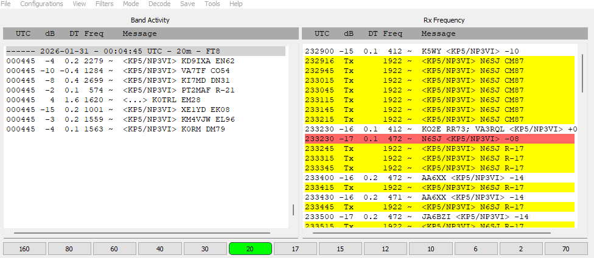

Very interesting. I did check Clublog a number of times, but had not yet seen this. But there is no “RR73” in my own log. I feel funny counting it, but I guess it is a full exchange of signal reports. If I want to try to work him again, will his log show me as a dupe and lock me out? Steve From: Paul Hansen <pwhansen@bellsouth.net> You’re in their log for 20 meter FT8. Thank You Paul W. Hansen, W6XA Amateur Radio Service 2134 Carthage Road Tucker, GA 30084 (864) 222-3539 From: Chat [mailto:chat-bounces@ncdxc.org] On Behalf Of Steve Jones via Chat I received a signal report on 20M FT8, but no “RR73”. Can I submit this to their logger for confirmation? Or do I just need to work them again with a full exchange? 73, Steve N6SJ From: Steve Jones <n6sj@earthlink.net>  |